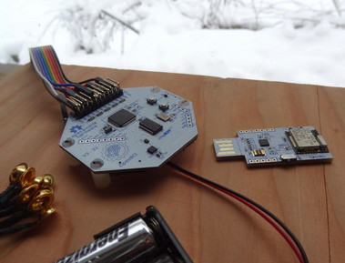

Bienvenue sur OpenCB
La chronobiologie étudie les rythmes biologiques des êtres vivants. Cette application a pour but d'éxtraire des rythmes de long terme à partir de données diverses, des signaux biologiques (EGG, ECG..) aux états d'âmes. (TODO potato graph Diary whit meta data, heath data, filter, model, envents, feedback...)
Pourquoi ?
Pourquoi devrait-on rechercher des motifs dans nos données biologiques ? Il serait possible, grâce à ces informations, de prévenir ou de mieux gérer beaucoup de problèmes en sachant déterminer s'il faut ou non faire quelque chose à un moment donné.
Pourquoi une application au code source ouvert ? Certaines personnes ne souhaitent pas mettre leur données vitales entre toutes les mains et risquer d'en perdre le contrôle. Ici, tout le monde peut érifier ce qui est fait des données, et peut même monter son propre serveur privé grâce àa la simplicité du déploiment en un clic. Une autre raison est la possibilité de partager les résultats. Cela peut être long de collecter des années de données pour en tirer des motifs utiles. Les personnes qui démarrent pourront bénéficier des modèles établis par d'autres.
Quel appareillage est nécessaire pour collecter des données ?
Vous pourriez par exemple utiliser votre smartphone pour réaliser un sondage quotidien de votre état, un appareil connecté ou un biosenseur pour obtenir des données, un microphone pour analyser votre intonation du jour, voire, dans vos rêves les plus fous une webcam pour analyser vos mouvements ou la couleur de votre peau.
La première version se focalise sur deux moyens : la solution basique pour les personnes qui n'ont pas d'appareillage spécifique, il est possible d'évaluer quotidiennement certains aspects personnels (forme physique et morale) graĉe à un simple mobile ou PC, via un sondage ou dans des versions ultérieures via des tests ou des mini-jeux, et deuxièmement la carte OpenBCI, qui permet de capturer des données biologiques vers une carte mémoire ou vers un serveur.
Analyse des données
L'analyse des donnes se fait principalement via des algorithmes génétiques qui générent des modèles et les appliquent aux données pour obtenir le meilleur score.
(TODO Data statistics, genetic algorithm, data formats...)
Les solutions basiques de capture des données
Les solutions pour les personnes qui n'ont pas d'appareillage spécifique : sondage quotidien, évaluation quotidienne via des tests ou des mini-jeux, entrées du smartphone, microphone (changement d'intonation), webcam (gestes, peau, yeux), etc...
Biosenseurs
Acquisition d'ondes cérébrales OpenBCI

(Todo... check for other devices that OpenBCI with open api)
Senseurs portables, appareils connectés, ...
(Todo... check for open protocol / api / programmable wearable devices )
Appareils de surveillance du sommeil
(Todo... check for open protocol / api / programmable sleep tracker)